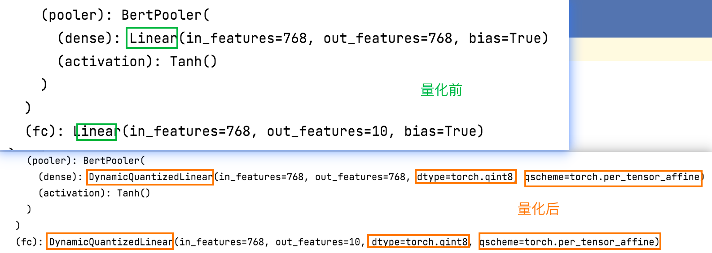
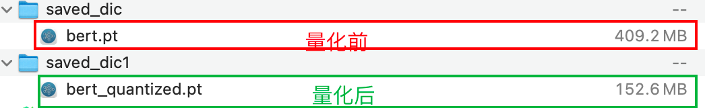

模型量化¶
学习目标：
1.知道什么是量化？
2.能够利用pytorch完成模型量化
1. 什么是模型的量化¶
- 通俗的理解, 就是将模型的参数精度进行降低操作, 用更少的比特位(torch.qint8)代替较多的比特位(torch.float32), 从而缩减模型, 并加速推断速度.
- 如上图所示, 左侧的是原始模型拥有更高的参数精度(float32), 等效于像素高, 看的清晰; 右侧的是量化后的模型, 拥有较低的参数精度(int8), 等效于像素低, 看的模糊, 但依然可以准确的识别图像内容.
- Pytorch的动态量化(Dynamic Quantization).
2.Pytorch的量化¶
直接使用torch.quantization.quantize_dynamic()来实现量化操作即可,量化需要在cpu中完成，所以需要把设备信息设置为cpu.
2.1 配置类文件中的Config类¶
将设备信息修改为cpu,该部分代码在：
04-bert/src/models/bert.py
具体如下所示：
# 在class Config中的__init__函数中修改下列代码部分
# 模型训练+预测的时候, 放开下一行代码, 在GPU上运行.
# self.device = torch.device("cuda" if torch.cuda.is_available() else "cpu") # 设备
# 模型量化的时候, 放开下一行代码, 在CPU上运行.
self.device = 'cpu'
2.2 模型量化实现¶
在这里我们使用上一章节训练好的bert模型进行量化
该部分代码在：
04-bert/src/run1.py
首先导入工具包和模块：
# 导入若干工具包
import torch
import numpy as np
from train_eval import test
from importlib import import_module
import argparse
from utils import build_dataset, build_iterator
接下来根据命令行参数选择使用的模型类型（默认为 "bert"），然后加载对应模型的配置和模型定义。接着，通过构建数据集和数据迭代器，准备好用于测试的数据。加载模型参数，并将模型量化为8位整数。最后，测试量化后的模型在测试集上的性能，并保存量化后的模型。
# 命令行参数解析
parser = argparse.ArgumentParser(description="Chinese Text Classification")
parser.add_argument("--model", type=str, default='bert', help="choose a model: bert")
args = parser.parse_args()
if __name__ == '__main__':
if args.model == 'bert':
# 指定模型类型为bert
model_name = 'bert'
x = import_module("models." + model_name)
config = x.Config()
# 设置随机种子，保证实验的可重复性
np.random.seed(1)
torch.manual_seed(1)
torch.cuda.manual_seed_all(1)
torch.backends.cudnn.deterministic = True
# 数据迭代器的预处理和生成
print('Loading data for Bert Model...')
train_data, dev_data, test_data = build_dataset(config)
train_iter = build_iterator(train_data, config)
dev_iter = build_iterator(dev_data, config)
test_iter = build_iterator(test_data, config)
# 实例化模型并加载参数，注意不要加载到GPU上，只能在CPU上实现模型量化
model = x.Model(config)
print(model)
model.load_state_dict(torch.load(config.save_path, map_location='cpu'))
# 量化BERT模型
quantized_model = torch.quantization.quantize_dynamic(model, {torch.nn.Linear}, dtype=torch.qint8)
print(quantized_model)
# 测试量化后的模型在测试集上的表现
test(config, quantized_model, test_iter)
# 保存量化后的模型
torch.save(quantized_model, config.save_path2)
2.3 输出结果¶
1.模型中的所有Linear层变成了DynamicQuantizedLinear层¶

3.训练和评估结果¶
Test Loss: 0.25, Test Acc: 91.92%
Precision, Recall and F1-Score...
precision recall f1-score support
finance 0.9561 0.8490 0.8994 1000
realty 0.9499 0.9300 0.9399 1000
stocks 0.8478 0.8580 0.8529 1000
education 0.9740 0.9360 0.9546 1000
science 0.8407 0.9080 0.8731 1000
society 0.9173 0.9100 0.9137 1000
politics 0.8961 0.9230 0.9094 1000
sports 0.9836 0.9620 0.9727 1000
game 0.9562 0.9390 0.9475 1000
entertainment 0.8898 0.9770 0.9314 1000
accuracy 0.9192 10000
macro avg 0.9212 0.9192 0.9194 10000
weighted avg 0.9212 0.9192 0.9194 10000
Confusion Matrix...
[[849 9 99 0 8 14 14 2 2 3]
[ 7 930 15 0 8 13 8 1 3 15]
[ 26 18 858 0 54 1 35 1 3 4]
[ 1 3 1 936 15 17 11 1 0 15]
[ 1 2 15 2 908 12 8 1 28 23]
[ 0 13 1 14 11 910 27 1 4 19]
[ 3 2 18 5 31 13 923 0 0 5]
[ 1 2 2 0 3 5 0 962 1 24]
[ 0 0 3 1 37 4 0 3 939 13]
[ 0 0 0 3 5 3 4 6 2 977]]
结论: 经过量化后的BERT模型, F1=91.92%, 相比于量化前的F1=93.64%有比较显著的下降, 但还可以接受, 也说明BERT模型的鲁棒性非常高!
3.对比模型压缩后的大小¶

模型参数文件大小缩减了256.6MB, 同时考虑到F1值仅仅下降了不到2个百分点, 效果非常优异!
3.总结¶
- 实现了对模型的动态量化, 并在CPU上测试了量化后的模型的表现, 验证了BERT模型具有良好的鲁棒性.
-
对比了BERT模型量化前后的大小, 说明BERT模型的压缩率很高, 同时还能保持表现不会显著下降.
-
注意: 如果将模型加载到GPU上直接量化, 会报错如下:
# 这说明动态量化目前在Pytorch平台上仅仅支持CPU上的操作!
untimeError: Could not run 'quantized::linear_prepack' with arguments from the 'UNKNOWN_TENSOR_TYPE_ID' backend. 'quantized::linear_prepack' is only available for these backends: [QuantizedCPU].